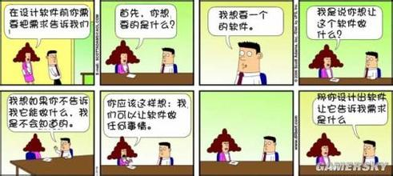
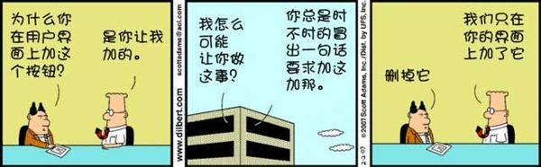

（一）
甲：各位老师，同学们大家晚上好。
乙：大家好
甲：我叫***，是计算机协会的优秀骨干，我旁边这位就不值得一提了。
乙：我怎么就不值得一提呀
甲：没什么人认识你
乙：我是少交朋友
甲：他叫***，也算是一个无名小人
乙：什么叫无名小人呀，这是……
甲：口误，说错了，是无名鸟人
乙：鸟人这也不对
甲：反正不是什么好人
乙：这话说的
甲：今天是优良学风班级展示，各班级都要出一个节目
乙：没错
甲：那我给大家说段相声
乙：唉，什么？相声？
乙：说相声那不是我们的节目，我们是计算机的，要有我们自己的特色
甲：那不是废话吗？难不成把一计算机搬上来跟大家说：“各位老师，各位同学，这叫计算机别名叫电脑，这是用电的”。
乙：多新鲜呀，电脑不用电能叫电脑吗？
|
（四）
甲：菜吃差不多了
乙：开始吃荤的了
甲：大家之间都不客气了
乙：怎么呢？
甲：你向对面的人敬酒，这叫p2p.
乙：这就是P2P
甲：你向对面的人敬酒，他回敬你，你又再敬他……
乙：来回的敬，这得叫P2P2P吧
甲：什么呀，这叫tcp.
乙：哦，这叫tcp
甲：光敬一个不痛快，你这就一桌人挨个敬酒，这叫令牌环
乙：是
甲：你说只要是兄弟就干了这杯，这叫广播。
乙：没错，是兄弟都得干了
甲：可是我们班的团支书姐姐听了不高兴了，只有兄弟吗？罚三杯。这叫炸弹。
乙：女生小气
甲：我喝了一口，你喝一杯
乙：这不是想把我灌醉吗？
甲：这叫恶意攻击
乙：人太坏了
|

（二）
甲：这得从入门开始，太难了别的专业的同学也看不明白，看不懂。
乙：是什么一回事
甲：光跟他们讲太乏味
乙：怎么呢？
甲： 改成相声，和生活联系起来
乙：这可有点难度
甲： 是不容易啊，所以现在我就用宴席的形式带给大家计算机入门。
乙：这就开始了
甲：比如说，我们优良学风班级很成功。
乙：都很高兴
甲: 这所有的人都去庆祝一下。
乙：太贵的也吃不起。
甲：大家都入座了，都是喝啤酒，你给自己来了一杯可乐
乙：怎么不一样
甲：这就叫低配置
乙：比别人的都差点
甲：你看着心里难受也赶紧给自己也来了啤酒了
乙：不能吃亏
甲：这叫标准配置
乙：大家都一样
甲：喝的高兴，学长来了，
乙：干嘛呢？
甲：给你倒了杯白酒
乙：这又怎么说
甲：这叫推荐配置
乙：别人推荐的
甲 ：你不太喜欢白酒
乙：劲太大
甲：这给自己来了杯茶，但是茶色跟啤酒一样
乙：怎么就一样呢？
甲：这就叫木马
乙：哦，木马哦，那是我小时候坐过的
甲：什么呀，木马那是计算机病毒
乙：赶紧从医院治疗去
甲：去医院干嘛呀？
乙：小心传染给你
甲：挨的着吗？那是电脑恶意程序
乙：这人有毛病，恶意程序不说，说什么病毒，吓人 |

（五）
甲：你看见电商协会的女会员特好看，就色眯眯的跑过去敬酒
乙：我像这样的人吗？
甲：这时他们会长站出来，想搭讪，先得过我这关，这叫防火墙
乙：给拦住了
甲：鉴于他们会长的表现，他们所有会员都向他敬酒
乙：那得多少人啊
甲：这叫一对多
乙：这么回事
甲：现在你是电商会长
乙：我是电商会长
甲：协会所有人都向你敬酒
乙：大家客气，我酒量不行，干了（猛喝）
甲：这酒量还不行呀
乙：你说这叫什么呀
甲：这叫做服务器
乙：这么个服务器啊
甲：酒是一样的，可喝的人的反映是不同的
乙：怎么个不同
甲：你越喝脸越红，这叫频繁分配释放资源
乙：我要越喝越白呢？
甲：这叫小白脸
乙：唉，啊，计算机有小白脸术语吗？
甲：我说的是你，计算机叫资源不释放
乙：合着骂我呢？
甲：有些男生已经醉了，却说我还能喝
乙：男生好强，都这样
甲：这叫资源额度不足
乙：想喝没酒量
甲：有些女生则好刚好相反
乙：怎么呢？
甲：自己明明能喝，却说我已经醉了
乙：刚好相反应该叫做资源保留
甲：没错资源保留，你肾不好，喝了一段时间就上厕所
乙：你肾才不好呢？
甲：我这不是是打个比方吗？怕大家不明白
乙：那这叫什么？
甲：这叫缓冲
乙：然后呢
甲：你上完厕所可没洗手，这叫不卫生
乙：跑题了啊
甲：你上完厕所可没冲厕所
乙：我这都习惯了
甲：不卫生
|
（三）
甲：什么计算机协会的，下去我就让会长把你给退了，丢脸！
乙：别呀，那你接着说
甲：茶，你看了不顺眼
乙：我喜欢喝饮料
甲：着又给自己倒了杯可乐，怕味不够，还滴了几滴醋
乙：什么毛病
甲：这可乐不仅颜色跟啤酒一样，而且不冒热气还有泡，这是超级木马
乙：比我坐的那档次要高
甲：人都到齐了，你这么贪杯，先一个人喝了一小口，这叫单元测试
乙：单元测试
甲：这时学长对旁边一同学说“哥们咱们随意”。
乙：这我明白，这叫交叉测试
甲：长进了不少。但旁边的同学说不行，这杯要干
乙：压力测试
甲：于是你说那就大家一起来吧
乙：这叫内部测试
甲：挺了解的
乙：那能丢计算机协会的脸吗？
甲：这个时候，老大来了，向全场举杯
乙：这叫公开测试
|
（六）
乙：还没入题呢？
甲：你从厕所出来，拿啤酒过去向老大那桌敬酒，可他们说不行
乙：怎么呢？
甲：“我们喝都是白的，你也要白的” 这叫本地化。
乙：入乡随俗
甲：敬完酒，你赶快回去找刚才那姑娘要电话
乙：还是搭讪要紧
甲：可她已经被一群街舞协会的包围了，你只能站在外圈，这叫排队
乙：街舞协会这一个个的也太快了
甲：于是不等了又再找一个
乙：人不能吊死在一棵树上
甲：这叫放弃资源
乙：是
甲：喝酒喝到最后的结果都一样
乙：没有不醉的
甲：你突然跑向厕所，这叫捕获异常
乙：这回出来，我先冲厕所，后洗手
甲：都放厕所坑里洗了
乙：味道挺好
甲：刚那漂亮MM在后面吐了，你觉得很惭愧，这叫程序异常
乙：哎呦，我的错
甲：结果你一个没忍住，吐在老大身上了，觉得很害怕 ，这叫系统崩溃
乙：还崩溃啥呀，赶紧装死吧！
|